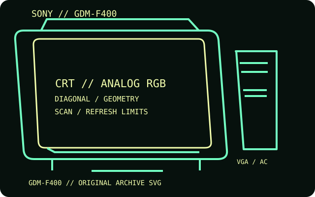

[ INDIVIDUAL COMPONENT // DISPLAYS ]
Sony GDM-F400 FD Trinitron
A 19-inch FD Trinitron computer display combining a flat aperture grille with dual analog video connection options.

IDENTIFICATION: Match the complete model and regional suffix on the rear label. Published CRT timing limits do not guarantee a particular used unit's condition; verify the tested host, cable and displayed mode.
Specifications
| Catalog subcategory | CRT displays |
|---|---|
| Exact product / family | Sony GDM-F400 FD Trinitron |
| Tube diagonal & image geometry | 19-inch FD Trinitron tube with 18-inch viewable image; 0.22 mm aperture-grille pitch; 4:3 picture. Image size, centering, landing and convergence are adjustable through the OSD. |
| Resolution & refresh | Maximum 1600 × 1200 at 85 Hz; horizontal scan range 30–107 kHz and vertical range 48–120 Hz. The 1600 × 1200 / 85 Hz mode is within Sony's documented limits. |
| Video inputs | 15-pin mini D-sub (VGA) and five BNC RGBHV connectors; analog RGB supports separate/composite sync and sync-on-green. One input is selected at a time. |
| Power | AC 100–240 V, 50/60 Hz; up to 150 W in operation and about 3 W in power-saving mode. Check the regional rear label before connection. |
| Host compatibility | Analog VGA works with compatible PCs and Macs; BNC is suitable for workstations and video cards with discrete RGB and sync. Digital-only hosts need active conversion. |
Identification and compatibility notes
Do not treat the GDM-F400 as the larger GDM-F500; the F400 is 19-inch-class and has a lower maximum scan specification.
Record the rear-label model, regional voltage rating, video connector used, source timing, adapter chain, visible image area and geometry/convergence condition. CRTs contain hazardous high-voltage circuits and heavy components; internal service belongs to qualified technicians.
Manufacturer documentation and sources
- Sony — GDM-F400 marketing specificationsSony model sheet with tube size, scan range, resolution and connectors.
- Sony — GDM-F400 operating instructionsOperating manual for controls, connection and power management.